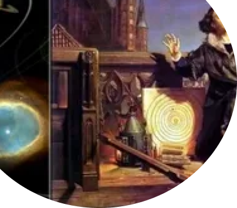
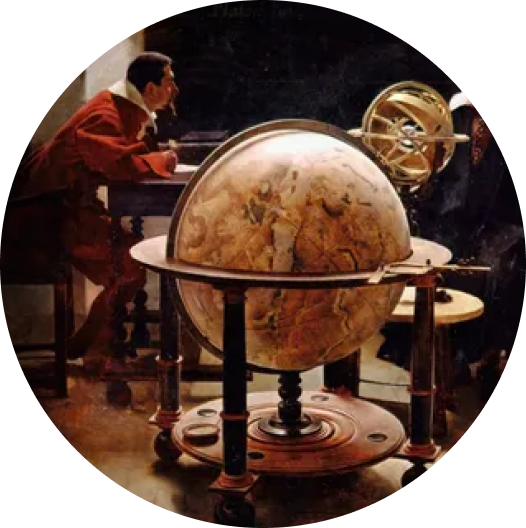

Подходят к концу гонения на ведьм, фанатизм верующих уходит. На фоне развития технологий и науки, приподные явления уже объяснялись с физической точки зрения, а не мифологической.
Религия
В 19 веке произошел подъем библейской критики, появились новые знания о религиозном разнообразии на других континентах, и, прежде всего, рост науки . Это привело к тому, что многие христиане стали подчеркивать братство, рассматривать чудеса как мифы и подчеркивать моральный подход, рассматривая религию как образ жизни, а не как открытую истину.